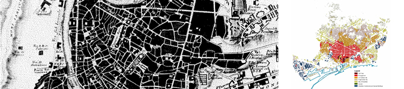
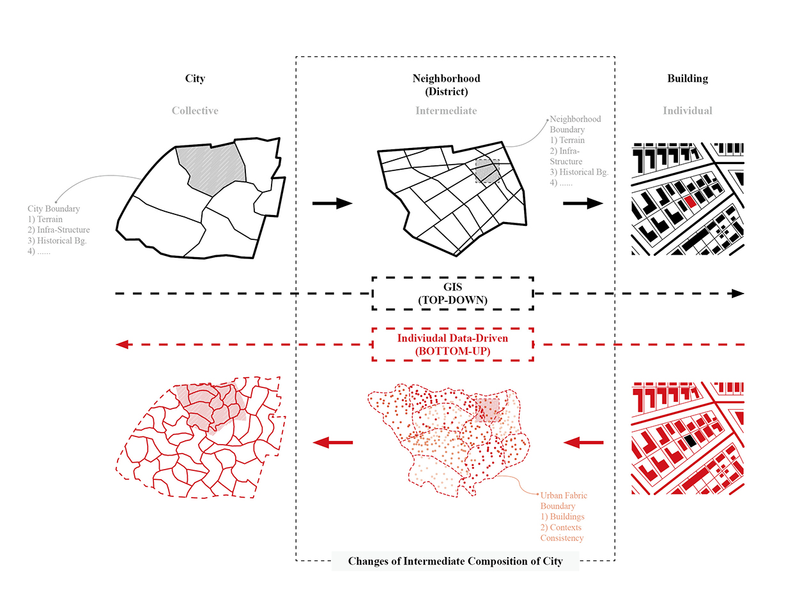
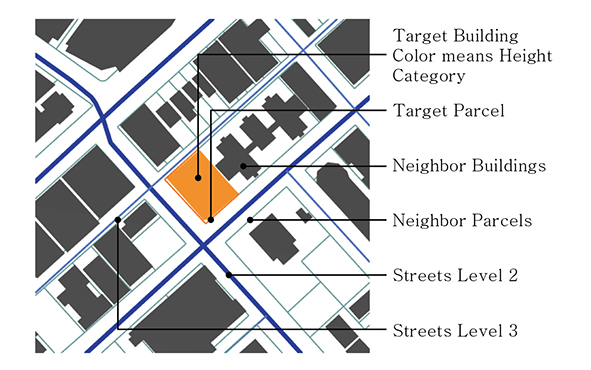
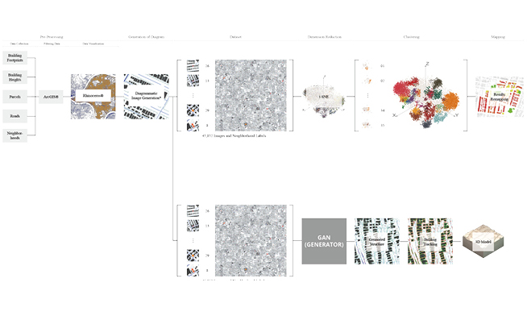
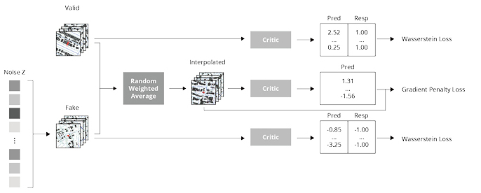
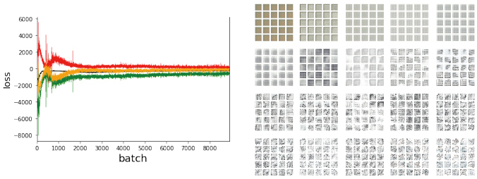
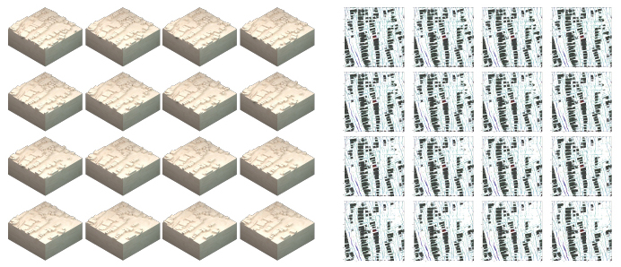
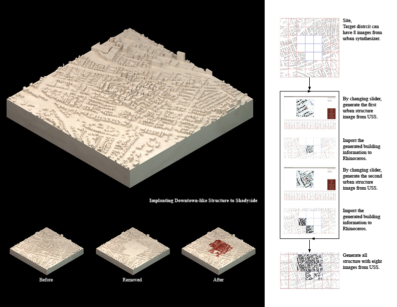

Urban structure is the arrangement of land use in urban areas, in other words, how the land use of a city is set out1). In the urban structure, morphological approaches of urban configuration is urban fabrics. It's a way of looking at a city as a tissue of cells and recognizing it with the patterns they create. In his viewpoint, patterns with complexity of urban forms can cover the character of a town or a town as whole. Urban form, in his definition, includes the seven primary components: materials, structures (i.e. encompassing details of construction), rooms, buildings, plots, streets and blocks, and urban fabrics. Particularly, the urban fabric is a synthesis of all components2). Therefore, the composition of urban form with complexity is the urban fabric that can be differentiated covering and illustrating the character of a part of city or a city as a whole.
The general method to use the concept of urban pattern in urban architecture is the figure-ground map which is a mapping method for the characteristics of city space by distinguishing buildings and land with black and white solids. The result of this method is a map that shows the spatial characteristics of the city by showing how public and private space exist in the city3).

Figure-ground map (Left) and Computational Urban Fabric Research of Barcelona (Right), "An automatic classification of urban texture: form and compactness of morphological homogeneous structures in Barcelona, c. Nicola et al, 2011"
There are many ways to examine urban morphological features. The most typical method is to analyze the shape of the city using predefined city boundaries and hierarchies. This method is advantageous to deal with politically, economically, socially and culturally recognized cities rather than the forms of cities themselves.
Another method is to analyze the morphological characteristics of the entire city, taking into account the characteristics of individual buildings. Beyond simply deriving the morphological characteristics from the shape of the building, it analyzes the morphological situation of the building through the contextual characteristics of the building and recognizes the city as a collection of these morphological situations.
This requires a new form of urban data describing all the buildings in the city and the morphological situation of those buildings. In this project, we created this new dataset for Pittsburgh.

Because buildings and their surroundings are large amounts of high-dimensional vectors that cannot be represented by short, single vectors, we need machine learning techniques to handle these high-dimensional vectors, and data representation for them.
This project proposes a diagrammatic representation as one of various representation method to express the information. Diagrammatic representation can be employed to use AI technology to learn the situation of the city and use it in the design and analysis process. In the diagrammatic images, we invented a specific setting for configuring the information and distinguishing the target and context information. A diagrammatic image has a target information placed on the center of the image, such as a target building footprint and a target parcel which is the lot boundary of the target building. The context information, such as context buildings, context parcels, and streets with a hierarchy is surrounding the target information. Due to this configuration, computer can detect the morphological relationship between a target and context information.

Drawing diagrammatic images requires the process to set the diagram drawing style. This style can be customized by the user’s intention or the purpose of the researches. In this research, after setting the window for the image range, we filled the building footprints which is inside of the window with solid color. Particularly, the target building has a color from the color gradients by its height. The color gradient can be segmented as five different colors to categorize the classes of buildings height: 1m - 12m (max. 3 stories), 12m-25m (max. 7 stories, low-rise building), 25m-75m (max. 20 stories, mid-rise building), 75m-150m (max. 35 stories, high-rise building), 150m - (super high-rise building). We only colored the target building by its height, but when other analyses are needed, all buildings within the window can be colored by their heights. Besides, I set the graphic style for all the line elements such as parcels and streets. I use a 'Custom Preview Line weights' component from the plug-in named 'Human' to express the line color and its thickness: highway as 10 px wide dark blue lines, major roads as 7px wide blue lines, minor roads as 3px wide sky-blue lines, and pedestrian paths as 1px wide light blue lines. Once assigning the diagram style is finished, geometries appear in the window according to the given style.

The Overall Concept of Urban Analysis with DID (top) and Urban Synthesizer as Generative Model with DID (bottom)
Two tasks can be performed based on information and AI techniques that contain the morphological characteristics of the city with high granularity: analysis and generation. Investigating the characteristics of the data, analysis through clustering and mapping in the actual map space has become a precedent study.7) In this project, experiment with generation of the same data will be executed. The goal is to create a new city's fabrics and structure using context-rich data containing the morphological characteristics of the city.

The Structure of WGAN-GP model with DID-PGH
To get the clear images as the results of generation, one of GAN models was selected. In the first experiment, I employed VAE model to create urban structures directly in the data space with reduced dimensionality without learning, but there was a fundamental limitation of the model in which blurry images were generated.Therefore, we used WGAN-GP, one of the GAN models to learn the characteristics of images.The overall structure model is similar to other general GAN model except for Gradient Penalty term. The model will naturally be inclined to find weights that ensure the gradient penalty term is minimized.

Learning Result (left) and Test Images by Each Epoch in Learning (right)
I trained this model about 8000 epochs. After 3000 epochs, Loss already seems to have converged and after that the change is much the same. This model was trained on a computer with the following specifications: 'Intel(R) Core (TM) i7-8700k @ 3.70GHz', 64GB memory, and two GTX-1080ti graphic cards. It took almost 37 hours to train the data.

3D Model from Synthesized Image (left) and Synthesized Image of Urban Structure

Example of Design Application
1) "BBC - Standard Grade Bitesize Geography - Urban structure and models : Revision". bbc.co.uk. 2013-04-20. Archived from the original on 2013-04-20. Retrieved 2019-04-01.
2) Kropf, “Urban Tissue and the Character of Towns.”, p.8
3) Jinmo Rhee, Context-rich Urban Analysis Using Machine Learning: A Case Study in Pittsburgh, PA
4) Jinmo Rhee, Context-rich Urban Analysis Using Machine Learning: A Case Study in Pittsburgh, PA
5) Developed by Jinmo Rhee, Pedro Alves Louis Veloso, Eddy Man Kim in Carnegie Mellon University
6) Jinmo Rhee, Context-rich Urban Analysis Using Machine Learning: A Case Study in Pittsburgh, PA
7) Jinmo Rhee, Context-rich Urban Analysis Using Machine Learning: A Case Study in Pittsburgh, PA